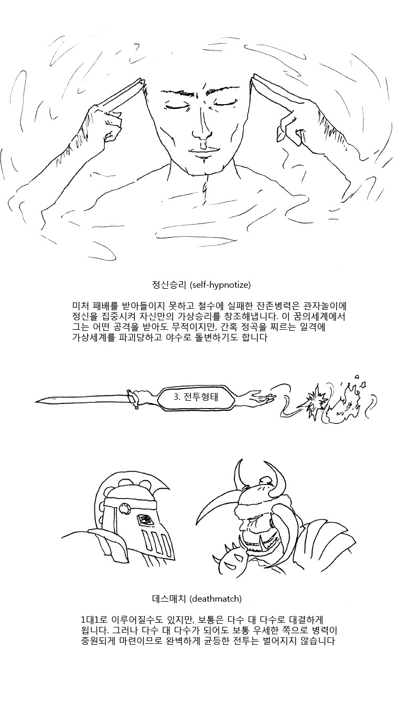
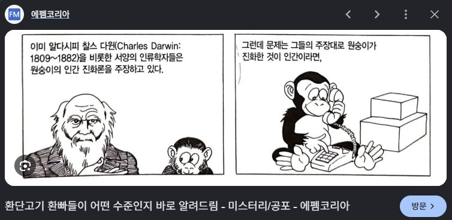

한중일이 전부 가지고 있는 특성 중에
"논리적으로 개털렸으면 진거임 " 이라는 공유 특성이 있음

(괜히 이런 짤이 존나 웃기다면서 공감얻은게 아님)
그래서 인터넷에선 마치 무협의 경합마냥 논리랑 지식으로 겨뤄서
나의 논리적 허점이나 지식의 부족이 드러나면 적군 뿐만이 아니라 아군한테까지
"개병신새끼 ㅋㅋㅋ" 소리 들으면서 울면서 경기장 내려와야됨

펼치는 논리가 개허접하거나 지식이 병신같으면 얄짤없음
"환단고기(煥單孤基)!"
"이야 저 개병신 논법(論法)을 쓰는 새끼가 아직 남아있다니"
"애미가 안뒤졌나보오? 애미의 애미는 분명 없는게 분명하오"
근데 씨발 기존의 논법이 좆도 안통하는 새끼들이 존재함
"아니 씨발년아 A=B, B=C 니까 A=C 잖아?! 개병신 무식한 새끼야!"
아무리 삼재논법으로 존나 조져도
"오우 시발 자신의 피부색을 부끄러워하지마새요. 수학을 잘하는걸 보니 역시 아시아인네요" 하니까
이런 말 듣고 온몸의 피가 역류해서 "끄으으으윽" 하고 주화입마 걸리는거임
베트남 새끼들이 딱 그거임 ㅋㅋㅋ
마교 새끼들이 살아있는 사람 잡아다가 활강시 만들어서 그걸로 정보 빼먹고 지랄 염병에 아녀자를 희롱하고 패악질을 부려서
"어찌 씨발 사람된 새끼들이 그딴 짓을 처할 수 있소?!"
갈(喝)! 했는데
"크크큭" 하면서 개미알 후루룩 하고
"누가 산 사람을 죽여서 시체로 만든 다음 그걸로 존속살인과 희롱, 패악질을 하지 말라고 정해는 놓았는가?"
아이고 씨발 정-사파 새끼들이랑 말싸움 할때는 몰랐는데 세외오궁, 마교 새끼들은 진짜 말이 안통하는구나 씨발!
하고 정신차리고 보니
그래도 정파새끼들이나 사파새끼들이랑은 "그나마 말"이라도 통했던걸 알게되는거지
베트남은 교육이 불법입니까?